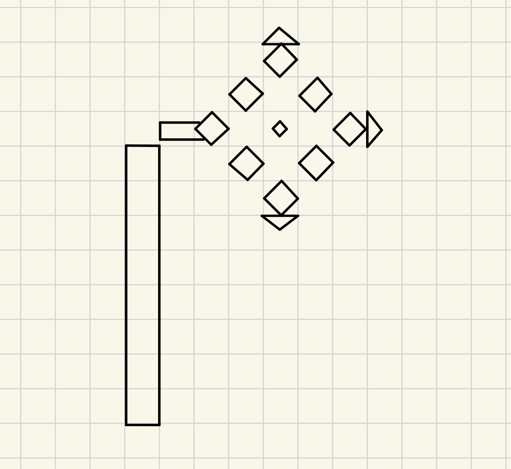

Name: Peter Xu
UCSC Email: jxu258@ucsc.edu
Draw Picture: This is my custom flower-shaped letter P design.
Awesomeness: Mirror Mode creates a symmetric copy, and Undo removes the most recent drawing action.
Reference Drawing:
